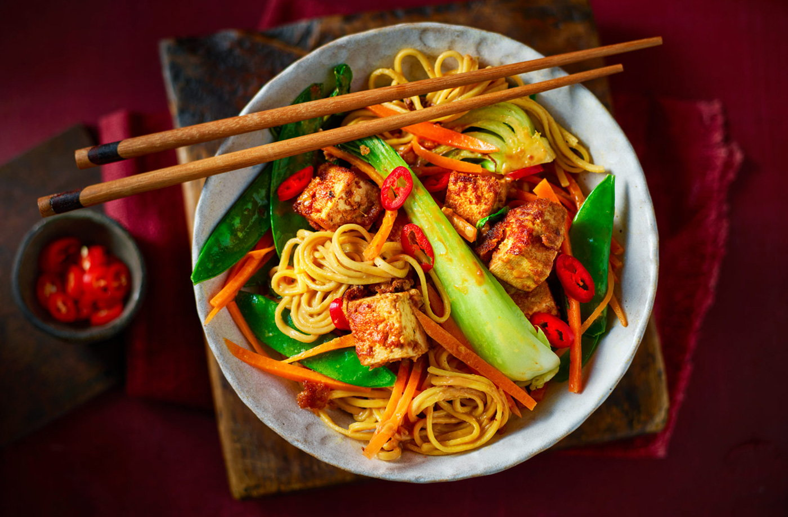

Tofu Peanut Butter Noodles Recipe

This tasty 20-minute dinner for one will cure your winter blues.
Noodles are coated in an indulgent nutty sauce and mixed with tofu and
vibrant veg. Use frozen ginger and garlic so you can enjoy fragrant
flavours while reducing your food waste.
Ingredients
- 2 tbsp crunchy peanut butter
- 1 tbsp dark soy sauce
- 1 tsp frozen chopped ginger
- 1 tsp frozen chopped garlic
- ½ red chilli, thinly sliced
- 125g firm tofu, such as Cauldron, cut into large cubes
- 75g medium egg noodles
- 1 tsp vegetable oil
- 1 head pak choi, quartered
- ½ medium carrot, cut into matchsticks
- 40g mangetout
Method
-
Stir together the peanut butter, soy sauce, ginger, garlic and
sliced chilli. Add 2 tbsp boiling water and mix until combined. Add
the tofu to the bowl, gently stirring until well coated. Leave to
marinade for 5 mins.
-
Bring a pan of water to the boil, add the noodles and cook for 5-6
mins until just tender. Drain well and set aside.
-
Heat the oil in a large non-stick frying pan or wok and lift the
tofu out of the marinade into the pan. Cook for 1-2 mins on each
side until well browned and crispy. Lift out of the pan and set
aside.
-
Add the pak choi, carrot and mangetout to the pan and stir-fry for
3-4 mins until beginning to colour.
-
Pour over any remaining marinade from the bowl and cook for 1 min.
-
Add the cooked noodles to the pan along with a splash of boiling
water if the sauce is too thick and cook for 1 min, stirring until
the noodles are well coated. Return the tofu to the pan to warm
through before tipping on a plate to serve.
TIP: Leftover tofu freezes well; why not make extra peanut
sauce and freeze marinaded tofu in a lidded container, ready to
defrost and cook.